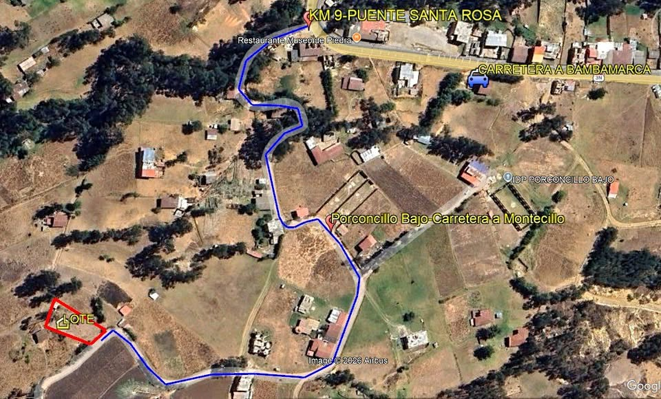

PEN18 906 m²

Venta de terreno Carretera a Bambamarca Km. 9. De la pista a 600m., en Porconcillo Bajo. Área es 906m2; frontis (a trocha carrozable) mide 20.0m. -EXTRA: Terreno cuenta con una casita al fondo de 2.5mx5.0m *Cuenta con servicio de luz. *Agua potable a solicitar con la JASS (conexión llega hasta la casita). Consultas al celular: 9/7/6/9/4/0/7/2/8